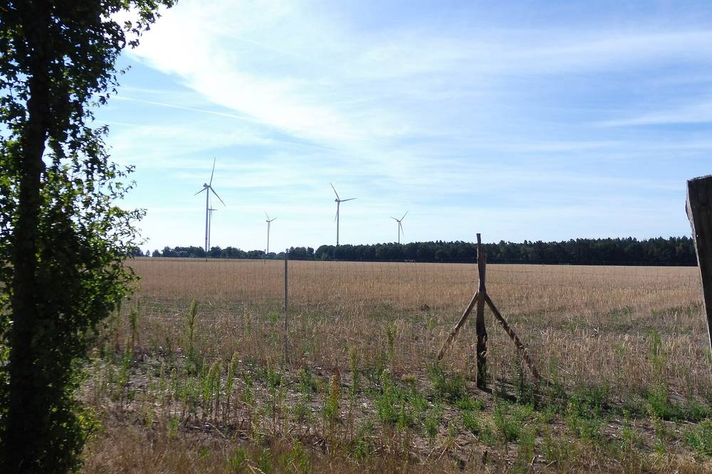

독일 메클렌부르크포어포메른 차기 연정, 풍력단지 2km·대형 태양광 500m 안 주민에 전력망 이용료 면제 추진

사민당·좌파당·녹색당 경제 분야 합의…시민참여법 이어 풍력 수익 주민 배분, 시민에너지기금 설립도 내걸어
독일 북동부 메클렌부르크포어포메른주에서 새 정부를 꾸릴 사민당·좌파당·녹색당이 재생에너지 시설 가까이 사는 주민에게 전기요금 혜택을 주겠다고 밝혔다. 마누엘라 슈베지히 주총리는 연정의 경제 분야 계획을 발표하며 풍력단지에서 2km 안, 대형 태양광 시설에서 500m 안에 사는 주민은 전력망 이용료를 면제받게 된다고 말했지만, 구체적인 시행 방식은 아직 정해지지 않았다. 녹색당 원내대표 클라우디아 뮐러는 이 지역에서 망 이용료가 "완전히 없어지도록" 힘쓰겠다고 했고, 시민에너지기금을 만들어 주민이 재생에너지 입지를 받아들이도록 하겠다는 뜻도 밝혔다. 연정은 풍력단지 주민이 사업자 이익에 참여하도록 한 기존 시민참여법도 이어 가기로 했다. 아울러 해상풍력 변환 플랫폼 건설로 조선·해운 일감을 늘리고, 값싼 전기로 다른 산업을 끌어들여 생산한 에너지를 남쪽으로 보내지 않고 주 안에서 쓰겠다는 구상을 내놨으며, 연정 협상은 마무리 단계에 들어갔다.
시민에너지 관점
발전기 옆에 사는 주민의 전기요금을 깎아 주는 것은 혜택이 누구에게 돌아가는지 가장 눈에 보이게 하는 방법이다. 메클렌부르크포어포메른은 이미 풍력단지 주민 이익참여를 법으로 정한 데 이어, 이제 거리 기준 요금 면제와 시민에너지기금까지 겹쳐 쌓고 있다. 요금 면제는 다른 지역 소비자 부담으로 돌아갈 수 있다는 우려도 있지만, 반대로 사업이 몇 년씩 멈추는 비용을 생각하면 주민 수용성에 쓰는 돈이 더 싸다. 한국도 풍력·태양광 주변 주민 지원을 일회성 발전기금에 맡기지 말고, 거리 기준 요금 할인과 주민 지분 참여를 함께 묶은 제도로 바꿔야 한다.
출처: Nordkurier(dpa) 2026-11-06 Andre Ballin(dpa) 원문 보기
창간 전 시험 발행 기사입니다.
ドイツ・メクレンブルク＝フォアポンメルン州の次期連立、風力発電所2km・大型太陽光500m以内の住民に送配電網利用料の免除を推進
社会民主党・左派党・緑の党が経済分野で合意…市民参加法を継続し風力収益を住民に配分、市民エネルギー基金の設立も掲げる
ドイツ北東部メクレンブルク＝フォアポンメルン州で新政権を組む社会民主党・左派党・緑の党が、再生可能エネルギー施設の近くに住む住民に電気料金の優遇を与える方針を示した。マヌエラ・シュヴェーズィヒ州首相は連立の経済分野の計画を発表し、風力発電所から2km以内、大型太陽光施設から500m以内に住む住民は送配電網の利用料を免除されると述べたが、具体的な実施方法はまだ決まっていない。緑の党のクラウディア・ミュラー院内代表は、これらの地域で網利用料が「完全に廃止される」よう取り組むとし、市民エネルギー基金をつくって住民が再エネの立地を受け入れやすくする考えも示した。連立は、風力発電所の住民が事業者の利益に参加できるようにした既存の市民参加法も継続する。さらに洋上風力の変換プラットフォーム建設で造船・海運の仕事を増やし、安い電気でほかの産業を呼び込み、生産したエネルギーを南へ送らず州内で使うという構想も打ち出しており、連立交渉は最終段階に入った。
市民エネルギーの視点
発電機の隣に住む住民の電気料金を下げることは、恩恵が誰に届くのかを最も目に見える形にする方法だ。メクレンブルク＝フォアポンメルン州は既に風力発電所の住民利益参加を法で定めており、そこに距離基準の料金免除と市民エネルギー基金を重ねようとしている。料金免除はほかの地域の消費者の負担に回りかねないとの懸念もあるが、事業が何年も止まるコストを考えれば、住民の受容性に使うお金のほうが安い。韓国も風力・太陽光周辺の住民支援を一回限りの発展基金に任せず、距離基準の料金割引と住民の持分参加を組み合わせた制度に改めるべきだ。
出典: Nordkurier(dpa) 2026-11-06 Andre Ballin(dpa) 原文を読む
創刊前の試験発行記事です。
德国梅克伦堡-前波美拉尼亚州下届联合政府拟免除风电场2公里、大型光伏500米范围内居民的电网使用费
社民党、左翼党、绿党就经济领域达成一致…延续市民参与法让居民分享风电收益，并提出设立市民能源基金
在德国东北部梅克伦堡-前波美拉尼亚州组建新政府的社民党、左翼党和绿党表示，将为住在可再生能源设施附近的居民提供电费优惠。州长曼努埃拉·施韦西格公布联合政府经济领域计划时说，居住在风电场2公里以内、大型光伏设施500米以内的居民将免缴电网使用费，但具体实施方式尚未确定。绿党议会党团主席克劳迪娅·穆勒表示，将努力让这些地区的电网使用费"彻底取消"，并希望通过设立市民能源基金，让居民更愿意接受可再生能源选址。联合政府还将延续现行的市民参与法，让风电场周边居民分享企业利润。此外，联合政府提出通过建造海上风电换流平台为造船和航运业带来订单，以低廉电价吸引其他产业，把生产的能源留在州内使用而不是输往南方。联合政府谈判已进入最后阶段。
市民能源视角
为住在发电机旁的居民降低电费，是让利益归属最直观可见的方式。梅克伦堡-前波美拉尼亚州已用法律规定风电场周边居民参与利润分享，如今又叠加按距离免除电网费和市民能源基金。有人担心免费会转嫁给其他地区的消费者，但若考虑项目停滞数年的代价，花在居民接受度上的钱反而更便宜。韩国也不应只靠一次性的发电基金支援风电、光伏周边居民，而应改为把按距离的电费折扣与居民持股参与结合起来的制度。
来源: Nordkurier(dpa) 2026-11-06 Andre Ballin(dpa) 查看原文
本文为创刊前试发行文章。
Incoming Mecklenburg-Western Pomerania Coalition Plans to Waive Grid Fees for Residents Within 2km of Wind Farms and 500m of Large Solar Parks
SPD, Left and Greens agree economic chapter; citizen participation law to continue sharing wind profits with residents, plus a planned citizen energy fund
The SPD, Left Party and Greens, who are forming the next government of the north-eastern German state of Mecklenburg-Western Pomerania, have pledged electricity cost relief for people living near renewable energy plants. Presenting the coalition's economic plans, Minister-President Manuela Schwesig said residents living within two kilometres of a wind farm or within 500 metres of a large solar installation would be exempted from grid fees, though the details of implementation remain open. Green parliamentary leader Claudia Müller said her party would push for grid fees in those areas to be "completely abolished" and hopes citizen energy funds will make renewable sites more acceptable to residents. The coalition will also continue the state's existing citizen participation law, which gives wind farm neighbours a share of company profits. It further plans to win shipbuilding and maritime work from building converter platforms for large offshore wind farms and to attract other industries with cheaper power, using the energy locally instead of sending it south; coalition talks are now in their final stage.
Citizen Energy View
Cutting the power bills of people who live next to the turbines is the most visible way to show who benefits. Mecklenburg-Western Pomerania already requires wind farms to share profits with neighbours by law and is now layering distance-based fee waivers and a citizen energy fund on top. Some worry that waivers shift costs to consumers elsewhere, but set against the cost of projects stalling for years, money spent on local acceptance is cheaper. South Korea, too, should stop relying on one-off development funds for communities near wind and solar plants and move to a system that combines distance-based bill discounts with resident equity stakes.
Source: Nordkurier(dpa) 2026-11-06 Andre Ballin(dpa) Read the original
This article was published during the trial period before launch.